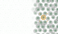

لكل نخلة
توأم رقمـي
A digital twin
for every palm
باسِقة تكشف سوسة النخيل الحمراء مبكراً بالدرون والذكاء الاصطناعي، قبل أن تنتشر في المزرعة. Basqah detects the red palm weevil early, using drones and AI, before it spreads through the farm.
تواصل معناGet in touchالمشكلةThe problem
عدوٌّ لا يُرىAn enemy you can’t see
سوسة النخيل الحمراء تتغذى على النخلة من الداخل. وحين تظهر العلامات على الجذع أو السعف، يكون الضرر قد وقع في الغالب، وتكون السوسة قد انتقلت إلى النخيل المجاور. The red palm weevil feeds on the palm from the inside. By the time signs show on the trunk or fronds, the damage is usually done, and the weevil has already moved on to nearby palms.
الفحص اليدوي نخلةً نخلة بطيء ومكلف، ولا يكفي لمزرعة فيها مئات النخيل. باسِقة تجعل الفحص دورياً وسريعاً، وتوجّه المزارع إلى النخلة التي تحتاجه فعلاً. Checking palms one by one is slow and costly, and it doesn’t scale to a farm with hundreds of palms. Basqah makes inspection routine and fast, and sends the farmer straight to the palm that needs attention.
كيف تعملHow it works
من المسح إلى النخلةFrom scan to palm
-
١1
يمسح الدرون المزرعةA drone scans the farm
صور حرارية وطيفية لكل نخلة، مع قراءات حساسات التربة.Thermal and spectral imagery of every palm, plus soil-sensor readings.
-
٢2
يحلل الذكاء الاصطناعيAI analyses each palm
لكل نخلة توأم رقمي يسجّل حالتها، ويلتقط علامات الإصابة المبكرة.Each palm gets a digital twin that tracks its health and catches early signs of infestation.
-
٣3
يتحرك المزارع في الوقت المناسبThe farmer acts in time
تنبيه بما هو مطلوب، وموقع النخلة على الخريطة، وتقرير للنخيل المصابة.A clear to-do, the palm’s exact spot on the map, and a report for infested palms.
- سليمةHealthy
- تحت المراقبةUnder watch
- تحتاج فحصاً عاجلاًNeeds urgent check
الخريطة هادئة حين يكون كل شيء سليماً، وواضحة حين تظهر مشكلة.The map stays calm when all is well, and speaks up when something isn’t.
الفريقThe team
من يقف وراء باسِقةThe people behind Basqah
-
رنا النجاشيRana Alnajashi
المؤسِّسة · قائدة المشروعFounder · Project Lead
مهندسة ذكاء اصطناعي وتعلّم آلةLead AI/ML Engineer
-
أحمد الرشيدAhmed Alrasheed
شريك مؤسِّسCo-Founder
مهندس وكلاء الذكاء الاصطناعي · مطوّر الخادمAI Agent Engineer · Backend Developer
-
رغد الحلوهRaghad Alhelwah
شريكة مؤسِّسةCo-Founder
مهندسة معمارية الأنظمة · مهندسة الأجهزةSystem Architect · Hardware Engineer
-
نوره الفايزNoura Alfaiz
شريكة مؤسِّسةCo-Founder
مصممة تجربة المستخدم · مطوّرة الواجهاتUI/UX Designer · Frontend Developer
لنتحدثLet’s talk
مستثمر، أو مزارع، أو جهة مهتمة بحماية النخيل؟ يسعدنا تواصلك.Investor, farmer, or working to protect palms? We’d love to hear from you.